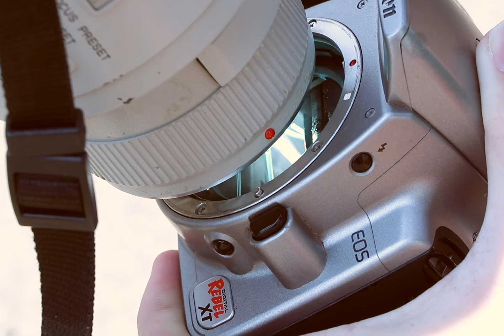

Ne pointez pas votre appareil photo vers l’éclipse ce soir : la preuve en vidéo

🔥 Top produits tech du moment
Publicité — Liens de partenariat Amazon : une commission peut être reversée, sans surcoût pour vous.
L'actualité tech ne cesse d'évoluer. Nouveaux produits, acquisitions, découvertes : chaque jour apporte son lot d'informations importantes pour comprendre le monde numérique de demain.
Ce qu'il faut retenir
Ce soir, la Lune viendra grignoter une large part du Soleil au-dessus de la France.
Avant de sortir l'appareil photo, la prudence reste de mise : une célèbre vidéo montre comment un boîtier non protégé peut littéralement fondre au Soleil.
Pourquoi c'est important
Cette information pourrait avoir des répercussions sur tout le secteur technologique. Elle concerne directement les utilisateurs de technologies numériques et mérite d'être suivie de près dans les prochaines semaines. Ne pointez pas votre appareil photo vers l’éclipse ce soir : la preuve en vidéo est ainsi un signal à prendre en compte pour comprendre les évolutions du secteur.
En résumé
Retenez l'essentiel : Ne pointez pas votre appareil photo vers l’éclipse ce soir : la preuve en vidéo. Cette actualité a été rapportée par 01net. Nous continuerons de suivre ce sujet et de vous tenir informés des prochaines évolutions.
Source : 01net